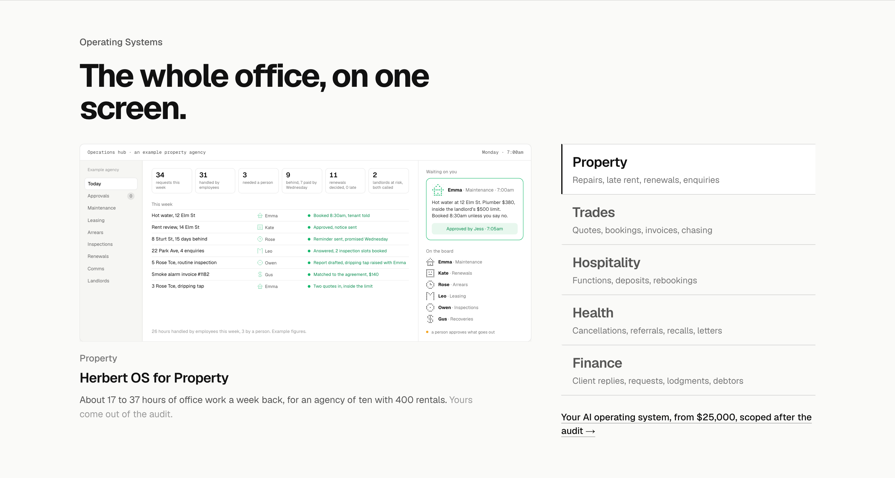
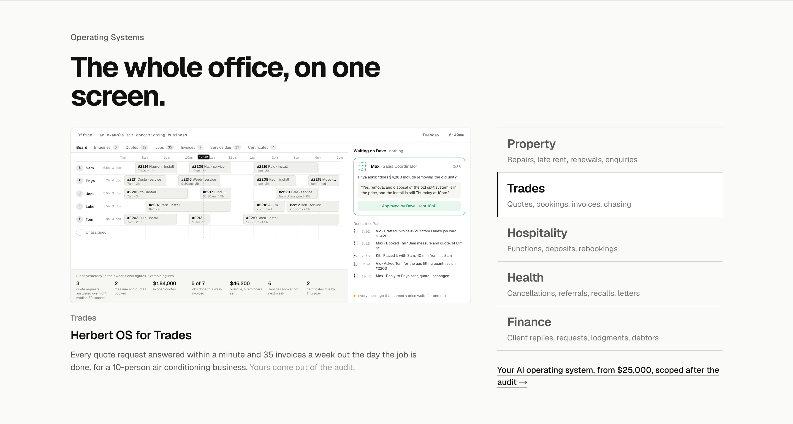
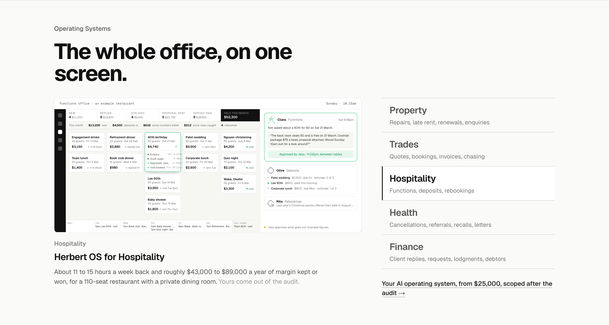
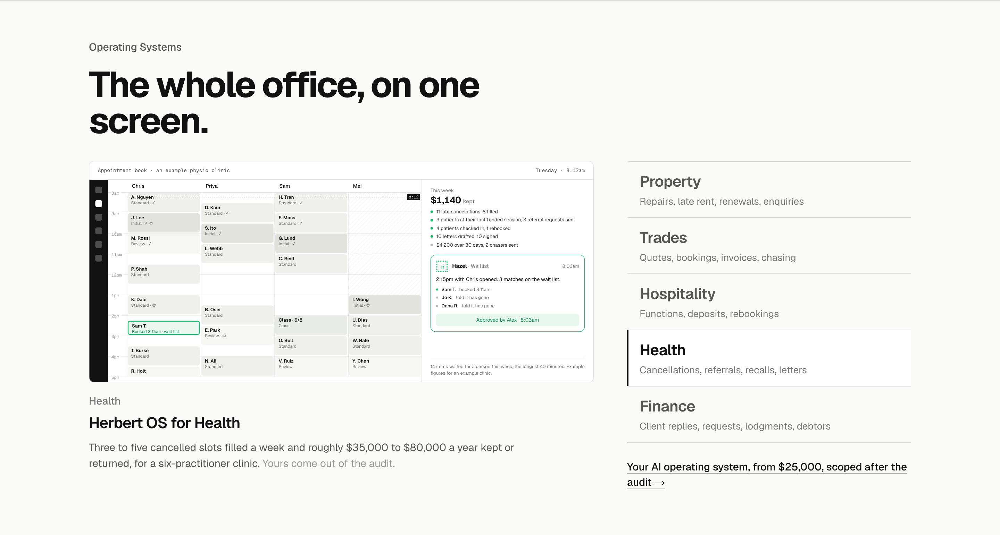
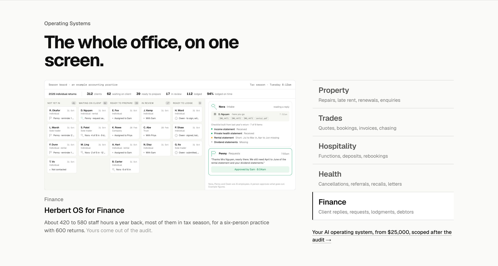
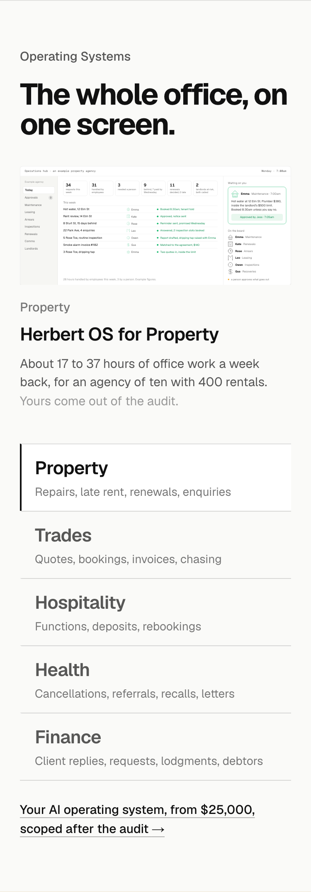

Operating Systems, as built
The section after its details pass, every pick in place: heading “The whole office, on one screen.”; the list as the industry big with the jobs that run by themselves under it; the title “Herbert OS for …” with no subtitle; the figure as one sentence for a named example business, closed with “Yours come out of the audit.”; one close, the rung and its price, under the list; no Built tag and no per-screen links. Calm until clicked, then that screen plays once. Every name and figure is made up.
PropertyHerbert OS for Property. The owner’s Monday page; under it the figure as one sentence for an agency of ten with 400 rentals, and “Yours come out of the audit.”

TradesHerbert OS for Trades. The dispatch board with the owner’s 7am figures; every quote request answered within a minute, for a 10-person air conditioning business.

HospitalityHerbert OS for Hospitality. The functions board with the till strip; 11 to 15 hours a week back and the margin kept or won, for a 110-seat restaurant.

HealthHerbert OS for Health. The appointment book with the owner’s weekly page; three to five cancelled slots filled a week, for a six-practitioner clinic.

FinanceHerbert OS for Finance. The season board; 420 to 580 staff hours a year back, most of them in tax season, for a six-person practice. Hours, never dollars.

Phone, as it is todayThe laptop layout stacked at 375: the screen scaled to a quarter. The phone board (three ways) is still waiting on your pick.
